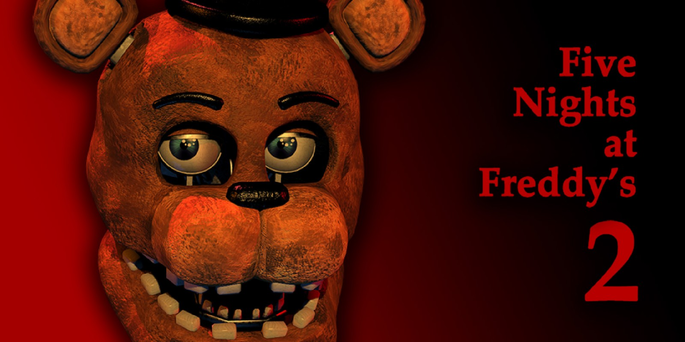

Five Nights at Freddy's 2
Five Nights at Freddy's 2 brengt nieuwe uitdagingen, een grotere cast van animatronics en een compleet nieuwe strategie. Als nachtbewaker moet je overleven zonder deuren, terwijl je het masker, de zaklamp en de beveiligingscamera's gebruikt om de animatronics op afstand te houden. Deze gids helpt je om alle vijf nachten (en meer) te doorstaan in dit spannende vervolg.
1. Spelmechanieken
De grootste verandering in FNaF 2 is dat je geen deuren meer hebt om jezelf te beschermen. Hier zijn de belangrijkste mechanieken:
- Freddy-masker: Gebruik het Freddy-masker om animatronics te misleiden wanneer ze je kantoor binnendringen.
- Zaklamp: Verlicht donkere gangen en controleer op animatronics. De zaklamp is ook cruciaal om Foxy weg te jagen.
- Music Box: Houd de muziekdoos opgewonden via de camera’s om de Marionette op afstand te houden.
2. De Animatronics
Five Nights at Freddy's 2 introduceert zowel nieuwe als oude animatronics. Hier is een overzicht:
- Toy Animatronics: Toy Freddy, Toy Bonnie en Toy Chica zijn minder agressief, maar bewegen snel. Gebruik het Freddy-masker om ze te misleiden.
- Balloon Boy (BB): Hij kan je zaklamp uitschakelen. Luister naar zijn lach en sluit het masker zodra hij dichtbij is.
- Mangle: Ze maakt een statisch geluid als ze in de buurt is. Gebruik het masker om haar te verdrijven.
- Old Animatronics: Freddy, Bonnie, Chica en Foxy keren terug. Vooral Foxy vereist speciale aandacht; gebruik je zaklamp om hem weg te jagen.
- The Marionette (Puppet): Houd de muziekdoos altijd opgewonden. Als het stopt, is het game over.
- Golden Freddy: Verschijnt soms als een zwevend hoofd. Zet snel je masker op om hem te verdrijven.
3. Nachtstrategieën
Elke nacht wordt progressief moeilijker. Hier zijn enkele tips:
- Nacht 1 & 2: Focus op het leren beheren van de muziekdoos en het gebruik van het masker. Deze nachten introduceren de Toy Animatronics en BB.
- Nacht 3 & 4: De Old Animatronics worden actiever. Blijf regelmatig de gangen controleren en gebruik je zaklamp efficiënt.
- Nacht 5 & 6: Alle animatronics zijn extreem agressief. Reageer snel op audiosignalen en verlies de muziekdoos nooit uit het oog.
4. Beheer je hulpmiddelen
Succes in FNaF 2 draait om efficiënt gebruik van je hulpmiddelen:
- Freddy-masker: Gebruik het onmiddellijk als een animatronic in je kantoor verschijnt. Wacht tot de weg vrij is voordat je het masker afdoet.
- Zaklamp: Gebruik de zaklamp spaarzaam om Foxy te verjagen. Als je batterij leeg raakt, wordt het vrijwel onmogelijk om te overleven.
- Muziekdoos: Dit is je hoogste prioriteit. Wind de doos regelmatig op, maar wees voorbereid om snel terug te schakelen naar het masker.
5. Geluiden en signalen
Geluid speelt een cruciale rol in FNaF 2. Leer de audio-aanwijzingen te herkennen:
- Geroezemoes en stappen: Signaleert dat animatronics bewegen.
- Gelach van Balloon Boy: BB is dichtbij en zal snel in je kantoor verschijnen.
- Statisch geluid: Mangle bevindt zich in de buurt.
6. Custom Night
Nadat je de reguliere nachten hebt voltooid, kun je Custom Night proberen. Hier kun je de moeilijkheidsgraad aanpassen. Enkele populaire uitdagingen:
- 20/20/20/20 Mode: De ultieme test waarbij alle animatronics op het hoogste niveau staan.
- Double Trouble: Alleen de Toy Bonnie, Old Bonnie en Mangle zijn actief.
- Foxy Foxy: Alleen Foxy en Mangle jagen je op.
Conclusie
Five Nights at Freddy's 2 combineert angstaanjagende animatronics met uitdagende mechanieken. Door je hulpmiddelen strategisch te gebruiken en de bewegingen van de animatronics te voorspellen, kun je de nachten overleven. Blijf kalm, houd de muziekdoos opgewonden en laat je niet verrassen door een jumpscare. Veel succes, en vergeet niet: blijf waakzaam!